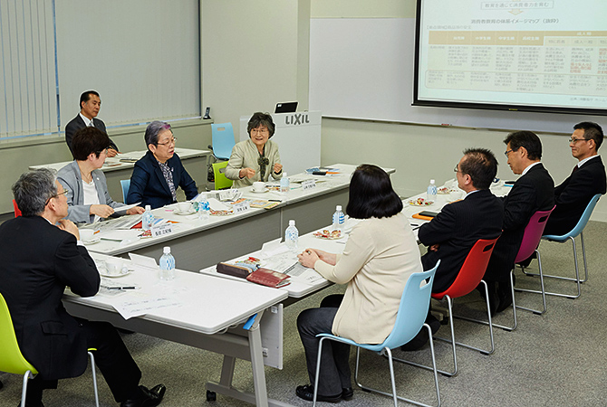
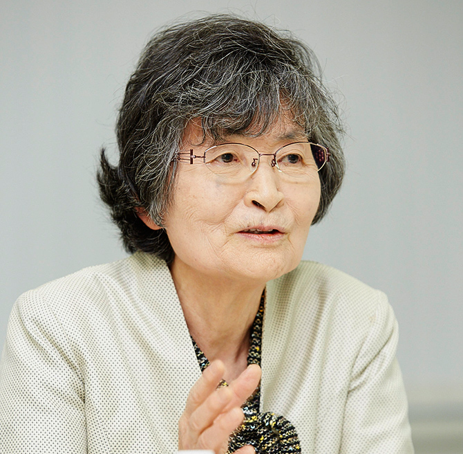
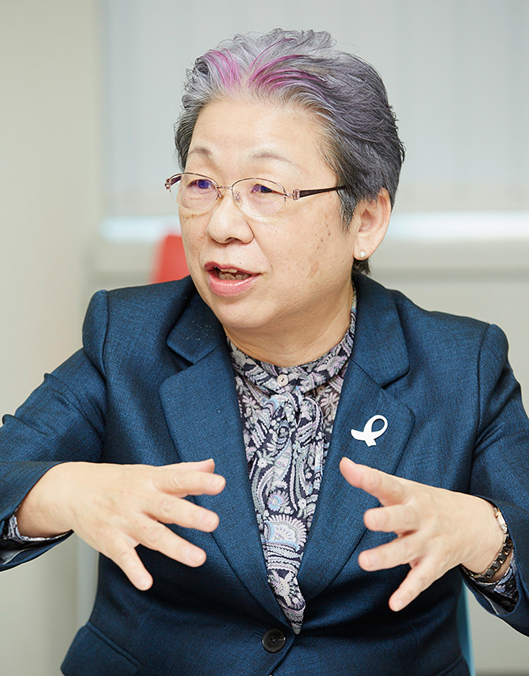
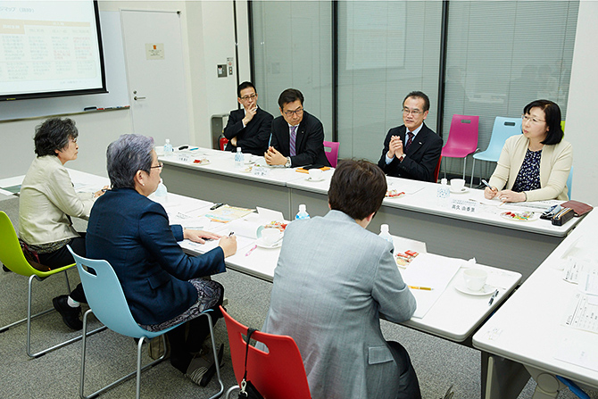
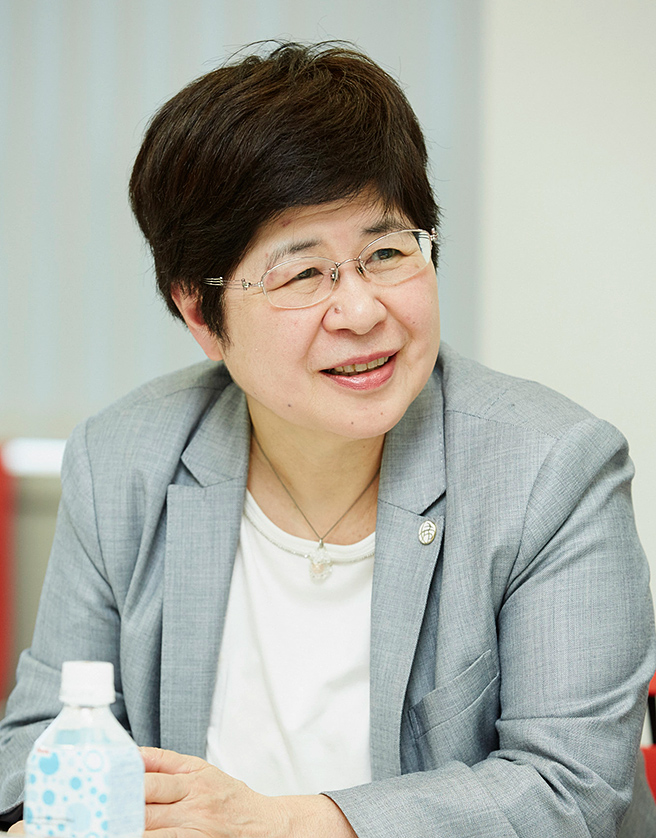
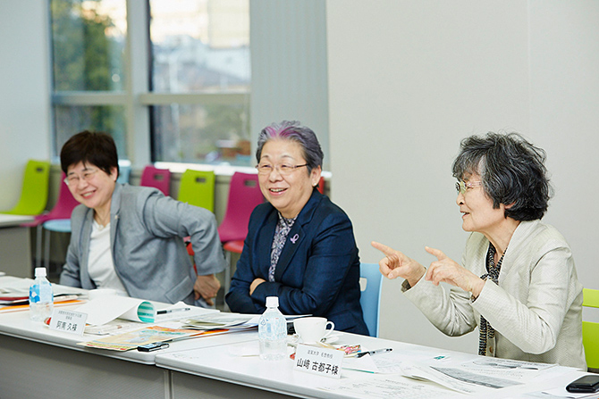
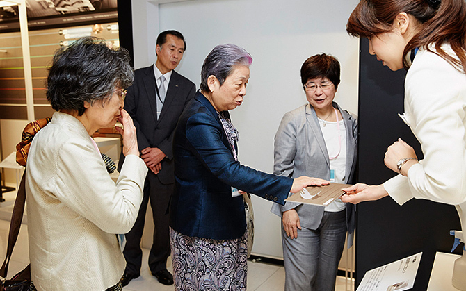

LIXILが取り組む製品安全活動の方向性が社会の要請とずれていないか検証し、必要な改善策を講じるために、製品安全に関わる有識者とのダイアログを毎年実施しています。
2016年3月「第5回製品安全ダイアログ」では、住環境学の研究、消費者市民社会の実現に向けた取り組み、地域での草の根の消費者啓発などの分野で活躍されている有識者の方々をお招きし、当社の製品安全活動についてご意見をいただきました。
| 日時 | 2016年3月22日 |
|---|---|
| 場所 | 株式会社LIXIL WINGビル内 LIXIL資料館 |
| 社外ステークホルダー | 阿南 久氏（一般社団法人消費者市民社会をつくる会 理事長） 長田 三紀氏（全国地域婦人団体連絡協議会 事務局長） 山﨑 古都子氏（滋賀大学 名誉教授） |
| 株式会社LIXILからの 参加者 |
山中 潤一（上席執行役員 R&D本部 新事業研究センター センター長） 小島 康夫（品質本部 品質マネジメント部 部長） 水野 治幸（R&D本部 生活価値研究所 所長） 高久 由香里（R&D本部 生活価値研究所 人間行動観察グループリーダー） |
※肩書・所属・役職名は2016年3月22日現在
LIXIL LIXILは顧客満足度を高める活動を続けており、その根本にあるのが製品安全と考えて取り組んでいます。製品安全活動を独りよがりなものにしない、との思いからダイアログを行い、さまざまなご意見をいただいてきました。先日、山﨑先生から居住力についてお聞きし、非常に共感しました。今回は居住力の観点からLIXILの取組についてご意見を伺いたいと思います。
山﨑 居住力とは、主体者である居住者自らが環境を整える力です。商品は住生活、住環境を構成する一つの舞台装置です。居住者が居住力を持って使いこなすことによって、商品の価値だけに止まらず、住環境そのものがグレードアップする。そういった力が居住力だと考えます。
阿南 先日のセミナーで山﨑先生から、昔は大掃除の日があったというお話をお聞きし、感激しました。
山﨑 地域一斉に大掃除をしないと、ねずみの駆除ができなかったんですね。そのため掃除休暇もありました。ところが、大型ごみが大量に出て自治体の処理が追いつかなかったり、家具の寿命を短くするといった論調も出てきたりして、大掃除の習慣がなくなっていきました。
阿南 みんなが家のことを考えて掃除し、メンテナンスしていけば、家の中での事故はもっと減るのではないか、なんとか復活できないだろうか、と思います。
LIXIL いま重大製品事故は、日本で年間約900件あります。残念ながらLIXIL製品も含まれています。初めから製品起因でないと判断して届け出ない企業もあるそうですので、単純に会社ごとに比較はできませんが、LIXILでは事故は全て報告しています。
長田 製品開発の時には、事故の情報がとても大切です。たとえば、低温やけどを避けるための温水洗浄便座の温度設定についても、情報があればより的確に設計できます。
山﨑 古都子氏山﨑 製品起因かどうかを判断する際に気になるのは、使用者と商品を作っている人との間にギャップがあるのではないかということです。
たとえば扉は、十分に開けられる状態や広さで使う前提で作ってはいないでしょうか。でも、日常の生活環境では、周りに様々な物が置かれ、勝手口やお風呂場では、扉を大きく開けられないことも少なくありません。消費者がどのような環境で使っているかを見定める必要があります。
LIXIL 2年前に新しい研究所を発足させて、「住まい方」や「暮らし方」を洞察する活動を強化しました。その過程で、「行動観察」や「感性工学」といった潜在意識を探る研究に取り組んでいます。普段の生活の中に入っていって「私たちが見ていることを意識しないで、いつも通り行動してください」とお願いすると、本人も気づかなかったことが見えてきます。それらの結果を分析して製品に反映させていますが、住まいに潜む危険を探る上で、今の山﨑先生のご指摘も取り入れて調査する必要があります。
山﨑 昔は必ずしも水質の良くない井戸があり、水を汲んだら甕（かめ）にとり、杉の葉を入れて浄化して使う。生水を飲まないという知恵がありました。浄化すれば水は澄みますが、細菌はなくなりませんから、質が悪い水は必ず沸騰させて使っていたのです。
それは生活の中で自然に身につけたことですが、今の子どもたちは、杉で水を濾こすとか、生水を沸かして飲むことについて、どれだけ知っているでしょう。水はそのまま飲めると思い込んでいますよね。だから、赤い水が出ると大騒動になります。世の中や製品が便利になればなるほど、私たちは持っていた知恵とか技術を失っています。先人の知恵が失われていくと、日本でも感染症が増えるということにもなりかねません。
LIXIL 居住力の伝承ですね。たとえば雨どいが詰まると水があふれて軒が腐って家が傷むということを、昔は当たり前に知っていました。そのため、水防の日とか、雨どいを掃除する日がありましたが、今はありません。
阿南 久氏阿南 技術の進歩の例で言いますと、トイレが電気製品になり暖房便座が実現し、快適になりましたがその半面、低温やけどなどの事故も発生するようになりました。これはどうなのだろうかと思います。トイレにももっと電気製品でないものも含めて選択肢があり、消費者自身の知恵や工夫が発揮される余地があっても良いのではないかと思います。
山﨑 つい先日、ガスファンヒーターを買い換えました。きっかけは、動かなくなったからですが、よくよく調べると内蔵しているホコリ除けのフィルターが破れていたのです。
ちょうど10年目でしたが、販売店から「10年前の部品はありません」と言われ、仕方なく新しいものにしました。「5年目くらいにフィルターを替えておけば、あと5年は使えたね」と、うちでは笑っています。部品があるときに取り換えて、古いものを上手に使っていくことも、居住力の一つだと思います。
阿南 長年持たせるには、きちんと掃除やメンテナンスをしないといけないということですね。そのような居住力をどうやって消費者に伝えていくのかですね。
LIXIL LIXILでは、製品安全をテーマに小学生向けのDVD教材を作成し、2015年から出前授業をスタートしました。
阿南 姿勢はとても良いと思います。一方、家庭で起きる製品事故の防止を考えると、学校教育に加えて、その事故にあうリスクが高い人たち、特に高齢者や体の不自由な方などに、直接伝えられる取組をもっと強化すると良いのではないでしょうか。
長田 三紀氏長田 暮らしの中にある危険といえば、昔は子どもが自分の自転車を手入れしていました。手入れは、不具合に気づくチャンスでもあります。子どもなら子どもに合うテーマを、もう少し上の年代なら、別のテーマというように、対象に応じて内容を分けることを考えても良いかもしれません。
LIXIL LIXILグループのビバホームでは、消費者に密着した製品をたくさん扱っています。自転車や石油ストーブ、踏み台など、製品ごとにどのような安全教育を消費者に提供すべきか考えるということですね。リフォーム＆デザインセンターを活用すれば、販売した商品に責任を持って、住生活に関わる物以外も含めて、消費者の皆さんと製品安全の話ができそうですね。
阿南 それはいいアイデアですね。
長田 最近、多世代の交流、子育て支援の一環として、おばあちゃん世代が手伝っていこうという取組がとても増え、放課後や学校が休みの土曜日に、講座を開きたいというニーズが出てきています。全国の婦人会の活動を調べると、子どもを対象にした料理教室や親子を集めた講座が開催されていました。
阿南 地域のそうした活動は、教える側にとっても勉強になりますし、子どもたちにも喜ばれる、すごく良い学びの場になっています。
LIXIL 学校の授業は枠がありますが、校外活動であればより時間がとれるかもしれませんね。
長田 LIXILでも、地域で取り組む方法をもっと考えても良いのではないでしょうか。放課後の協力団体はたくさんあります。下校時間に皆でお掃除をしながら子どもたちを見守るなどいろいろな活動をしています。OBの力を借りてはいかがでしょう。
LIXIL OBの活用はすごくいいですね。実はOBの話ですが、引退した品質の担当者が製品を実際に使用すると、悪いところがよく分かるんですね。いろいろ指摘を受けますが、このパワーをWin-Winの形で活かせていません。
長田 消費者としての視点を持った社員を育てることが必要で、そこが改善点だと思います。
阿南 私が「消費者市民社会をつくる会」を立ち上げたのは、安全な製品を選ぶ力や製品を安全に使う力があまりにも低下していると感じたため、その力を消費者自身が学び、取り戻していこうと思ったからです。その学びの場に企業も参加し、企業が安全な製品をつくるために込めた思いや安全に関する情報を消費者と共有し、学び合うことで、企業と消費者が協働して安全な社会をつくっていくことを目指しています。企業の技術開発が進むなか、年配者が必ずしも生活技術が高いというわけではなく、全年代にわたって学びの場が必要です。地域の暮らしの現場で事業者と消費者の学びあいの場を持つことがポイントだと考えます。
LIXIL 最後に、LIXILが製品安全という社会的要請に応えるためのアドバイスや期待について、お聞かせください。
長田 LIXILの社員それぞれのご家族や周囲に、そして社員の中にも消費者としての視点を持った方がいらっしゃると思います。ぜひそうした声を聞くことを大切にしてください。
阿南 LIXILの取組を聞かせてもらい、地域の暮らしの現場で消費者の啓発を推進していける企業だと思いました。今後も注目してまいります。
山﨑 ウェッジウッドでは、規格番号を言えば昔の皿を1枚でも買えると聞いたことがあります。企業のDNAは、革新的な技術を開発することだと思いますが、10年で部品がなくなるのではなく、自社で開発したものをずっと持ち続けていく側面と、新たな技術を開発する側面を両立できれば、LIXILの製品安全活動がさらに効果を発揮できると思います。
LIXIL資料館見学
LIXIL出席者
山中潤一
小島康夫
水野治幸
高久由香里